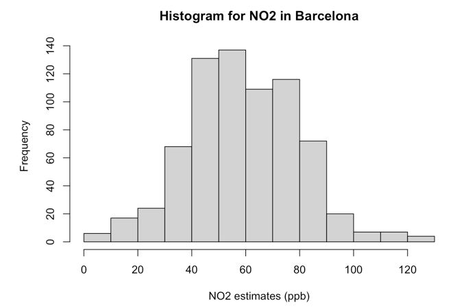
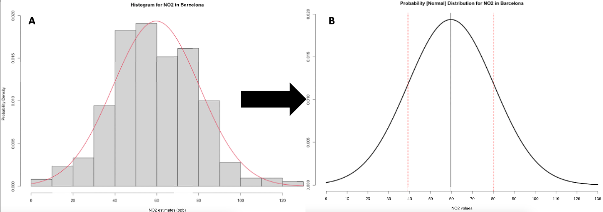
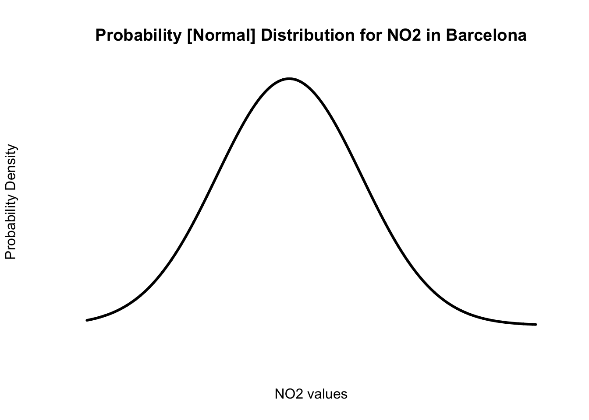
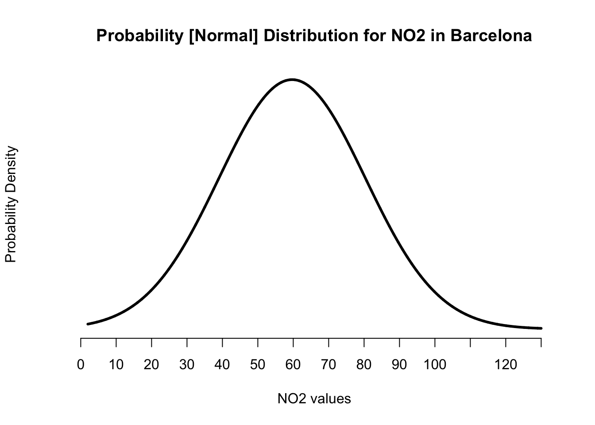
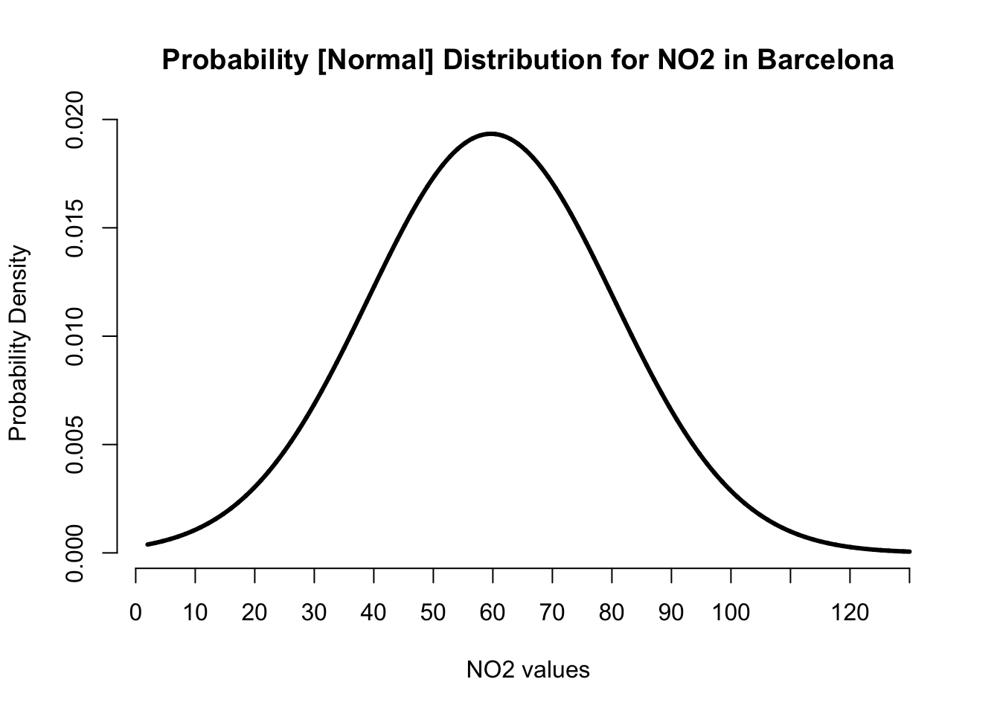
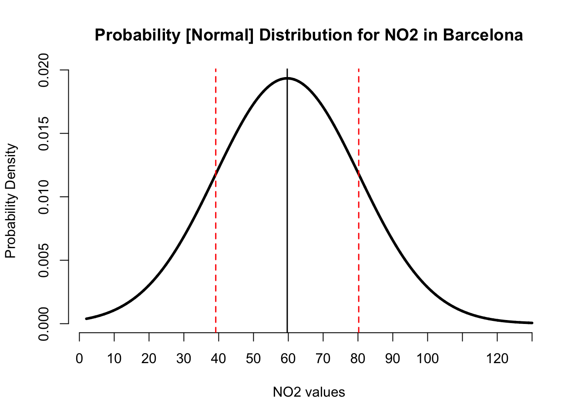
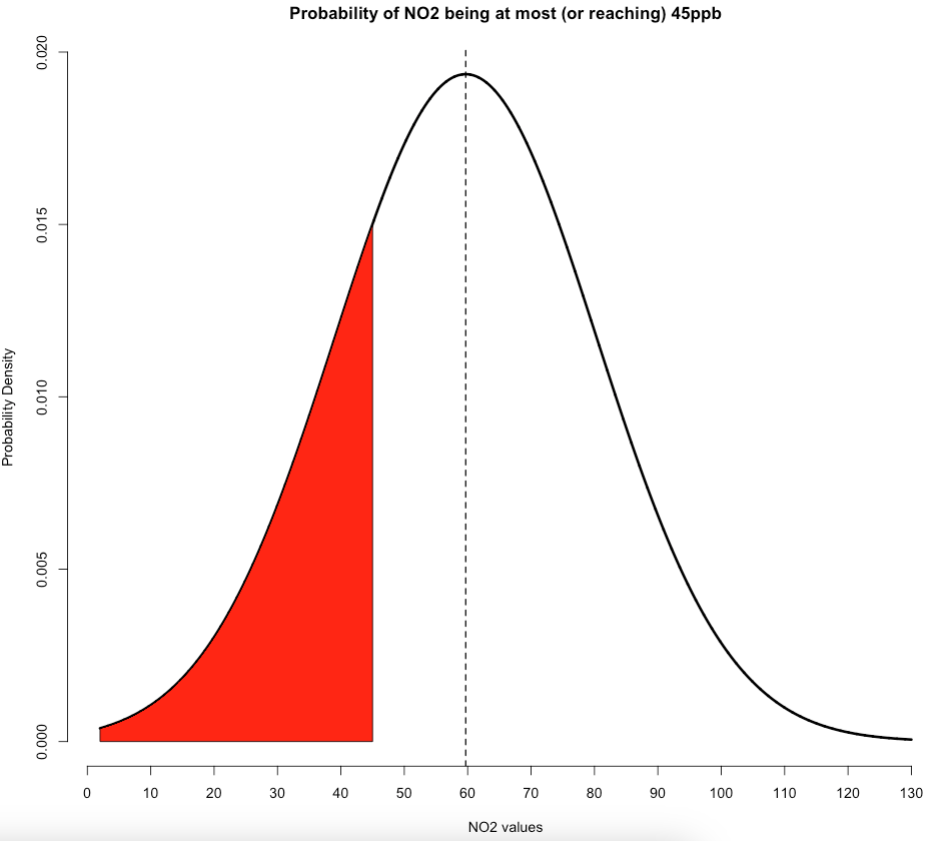
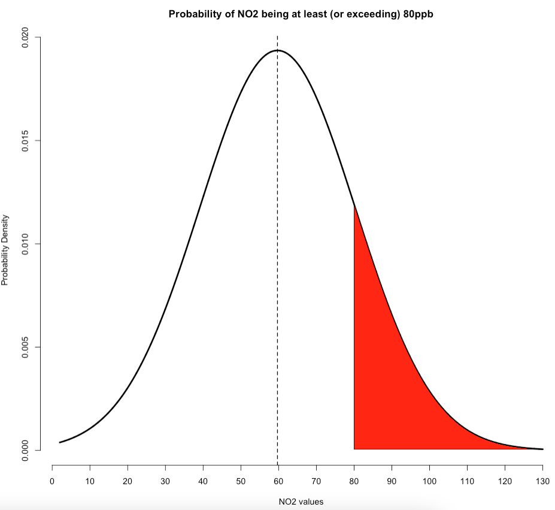
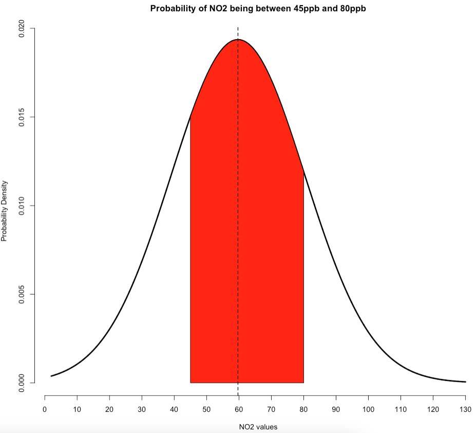

Part 4: Introduction to Probability Distribution
Quick Recap
Last week’s tutorials, in [part three of the workbook], we learnt how to perform some basic descriptive analysis of air pollution data (specifically 718 observations of Nitrogen Dioxide (NO\(_2\)) in [Eixample, Barcelona]. We derived the following outputs:
Frequency distribution and table for ambient NO\(_2\) levels in Barcelona, which told us how often a particular measure for NO\(_2\) was observed. For instance, we found that in Barcelona, the common measure for ambient NO\(_2\) were values that fell in the range of 50-60ppb that accounted for
19.08%of the data.Cumulative frequency distribution of ambient NO\(_2\) levels in Barcelona, which - based on a stated value/threshold of interest - indicated how often a particular measure for N0\(_2\) was observed. For example, based on this threshold
<50ppb, we found that it corresponds to 246 measurements for NO\(_2\) below50ppbwhich composed of0.3426 (34.26%)of the data.Histogram, which was simply a graphically representation that reflected our Frequency distribution. For instance, the image we produced last week:

- Central Tendency Measures, Variance & Standard Deviation: These are a set of statistical estimates we used to provide a concise summary of the data. There more important measures were the mean (or average) and standard deviation. Recall in our air pollution data, we found the overall mean air pollutions level for NO\(_2\) in [Eixample, Barcelona] was
59.69ppbwith a standard deviation (i.e., error) of±20.63pbb.
These four recap points were brought up because they are all connected to Probability Distributions. Probability distributions are indeed the basis of data sciences, we actually use to these help model our world, enabling us to estimate or predict the probability that an event (e.g., disease outbreak, mosquito infestation, crime outcome, wildfire hazard etc.,) may occur or not. More importantly, we use these specifically in Hypothesis Testing when conducting Inferential Statistics - of course, this important point is a story for another day as some of you will see its connection in term two’s Geography in the Field II (GEOG0014) and/or in Introduction to Quantitative Research Methods (POLS0008).
In this tutorial, you will be introduced to the Normal Distribution, a famous one which has its place in statistical analysis. [Alright, we’re in final stretch - let’s do this!]
What are Probability Distributions?
[Context]: What are Probability Distributions? (Length: 04:34 minutes)
Watch on [YouTube]
Do remember a time in our GSCEs when we were asked to compute the probability of an event such as - let’s say - what the probability of throwing a die just once and it showing the value “six” as an outcome? The obvious answer to that is 1/6. Here, we computed the probability of just a single outcome. Probability Distributions on the other hand allows us to compute probabilities for ALL possible outcomes. There are [SEVERAL] different types of probability distributions; however, the most common types you will come across in data science are:
- Normal Distribution for continuous data that are measurable (e.g., height, age, air pollution levels etc.)
- Poisson Distribution for discrete data that are countable (e.g., number of COVID-19 cases, reported number of phone snatched victims etc.,)
- Uniform Distribution for continuous or discrete data are measurable or countable, respectively, where every data point is assumed to have an equal chance of being observed.
- Bernoulli Distribution for binary data that contain two categories that are of a Yes/No, Success/Failure, In/Out or Win/Lose format (e.g., a disease outcome of a patient (Yes, No), A victim of theft (Yes, No) and so on).
Probability distributions are always represented in a graphical format as a curve. As stated, the Normal Distribution, which is a bell-shaped curve, is the most “famous” and widely used probability distribution because - surprisingly - a lot of measurable phenomena that are continuous data tend to be approximately bell-shaped.
For instance, let’s take our previous example of the histogram graph we created from the NO\(_2\) data in Barcelona. While the graph shows the frequency of NO\(_2\) data using rectangles. The height of a rectangle (the vertical axis) basically represents the distribution frequency for the NO\(_2\) measure, as in, the amount, or how often that value was measured.
Now, notice how the above figure output takes on shape that is somewhat akin to that of a bell-curve? The histogram indeed describes the shape for the ambient NO\(_2\) measures as a distribution that’s bell-shaped which was centered on the mean value of 59.69ppb and error (i.e., standard deviation away from the mean) was plus or minus 20.63pbb. This output reproduced in image [A] was generated from the data that follows Normal Distribution.

Sometimes, we can be in a situation where we are dealing with a data science problem but do not have any data at our disposal. But with probability distributions, we can do a work around if have prior knowledge or prior information of the problem. For instance, it is possible for us to generate a theoretical distribution for these NO\(_2\) values based on our knowledge of its mean and standard deviation with the assumption that its bell-shaped in the first place as shown in image [B]. This curve will show us the probability of observing every single possible value for the NO\(_2\) in Barcelona, as well as simulate a similar dataset.
Let us learn how to generate this curve shown in image B as a step-by-step demonstration.
How to generate a Normal Distribution curve
[Coding]: How to create the Normal Distribution curve (Length: 32:53 minutes)
Watch on [YouTube]
We will need to re-import the Barcelona_Air_Pollution_data.csv into RStudio and call this object air_quality_data. Recall, we imported this data in last week’s workshop - you can see the instructions [HERE]).
IMPORTANT NOTE: Importing data and setting up your working directory has been covered extensively in last week’s content. In case you are having trouble, please refer to the learning materials [HERE]
Let’s use the mean(), sd(), min() and max() function on the NO2_est variable to compute some important values which will use as a basis to create the normal distribution plot.
## [1] 59.6922## [1] 20.60876## [1] 2## [1] 130For the graph, we will need to create a template for the x-axis in a way that contains clean intervals of 10’s starting from 0, and ending up to 130 so as to capture the minimum and maximum values for NO\(_2\).
## [1] 0 10 20 30 40 50 60 70 80 90 100 110 120 130Now, we are going to create the a vector for the x-axis which will contain a sequence of EVERY possible value for the NO\(_2\) within the range of 2ppb (minimum) to 130ppb (maximum). Here, we will create a series of clean values of equal intervals of 0.01 starting from 2 (lowest possible value), and up to 130 (highest possible value) that we know from our dataset.
# create actual x-axis for every single possible value between 2 to 130
x_axis <- seq(2, 130, by = 0.01)IMPORTANT NOTE: The above code will create a sequence of values starting from 2 and ending at 130. These values will be 2.00, 2.01, 2.02, 2.03 … and so on and so forth.
Now, we are going to use a new function called dnorm() which allows us to compute the probability density for each of the values along the x_axis object we created. In this function, we will need to specify our prior information which is our knowledge about the pollution levels in Barcelona. Hence, we will specify the mean and standard deviation.
# we use to x_axis and our known mean and SD
probability_estimates <- dnorm(x_axis, mean = 59.69, sd = 20.63)IMPORTANT NOTE: The above code is estimating the exact probability of each value contained in that x_axis object. Hence, each value i.e., 2.00, 2.01, 2.02, 2.03 … and so on and so forth, will have its own probability estimate which is called a probability density
Now that we have the key ingredients to visualise our probability distribution for the NO\(_2\) values in Barcelona. We can proceed to create our graph from scratch. We start with using the plot() and applying the labels.
# create a plot from scratch
plot(x_axis, probability_estimates, type = "l", lwd = 3, axes = FALSE,
main = "Probability [Normal] Distribution for NO2 in Barcelona",
xlab = "NO2 values", ylab = "Probability Density")
IMPORTANT NOTE: This is full-on custom graph we are making in RStudio. As there is no conventional way of producing such a graph. This is where the programming and hacks come to play, and brute forcing it [John Wick style] until we get the desired result!
About the code:
plot(x_axis, probability_estimates...), we are saying apply the values fromx_axison to the x-axis and those fromprobability_estimateson to the y-axis.- The
type = "l", we are saying that this is a line/curve plot. lwd = 3, this controls the thickness of the line width. Here, we have set this to 3.axes = FALSE, we have deliberately set this to not appear. We want to fully customise our graph as you will see in the next set of codes.main = "...", set the title of plotxlab = "...", set the title for the x-axisylab = "...", set the title for the y-axis
Let’s add our custom made x-axis.
# create a plot from scratch
plot(x_axis, probability_estimates, type = "l", lwd = 3, axes = FALSE,
main = "Probability [Normal] Distribution for NO2 in Barcelona",
xlab = "NO2 values", ylab = "Probability Density")
# add x-axis and use the interval breaks we created earlier on
axis(1, at = intervals)
Let see the maximum probability density estimate, this information will help us to customise the y-axis appropriately
## [1] 0.01933797Its 0.01933797. Okay then, so let’s add y-axis which starts from 0 and end at 0.020 spaced at intervals of 0.005.
# create a plot from scratch
plot(x_axis, probability_estimates, type = "l", lwd = 3, axes = FALSE,
main = "Probability [Normal] Distribution for NO2 in Barcelona",
xlab = "NO2 values", ylab = "Probability Density")
# add x-axis and use the interval breaks we created earlier on
axis(1, at = intervals)
# add y-axis and start from 0 and end at 0.020 at intervals of 0.005
axis(2, at = c(0, 0.005, 0.010, 0.015, 0.020))
We created the normal distribution curve. Now, we add the reference lines for the mean as well as the lower and upper bounds for the standard deviation.
# create a plot from scratch
plot(x_axis, probability_estimates, type = "l", lwd = 3, axes = FALSE,
main = "Probability [Normal] Distribution for NO2 in Barcelona",
xlab = "NO2 values", ylab = "Probability Density")
# add x-axis and use the classes breaks from the histogram
axis(1, at = intervals)
# add y-axis and start from 0 and end at 0.020 at intervals of 0.005
axis(2, at = c(0, 0.005, 0.010, 0.015, 0.020))
# add vertical line for mean = 59.69
abline(v=59.69, lwd = 1.5, col="black")
# add two vertical lines for the plus and minus values for our sd = 20.63
# lower = 59.69 - 20.63
# upper = 59.69 + 20.63
abline(v=c(39.16, 80.22), lty="dashed", lwd = 1.5, col="red")
IMPORTANT NOTE: The centre black line represents the position of the mean on the x-axis. Whilst the red dashed lines are the plus and minus limits from the standard deviations.
About the code:
abline(...), we are saying apply the reference line on main plot.v = ..., we are adding a vertical line to a specified value on the x-axislty = "dashed", controls the style format of line. Here, its “dashed”
This is the expected output. Let’s demonstrate how to use it for making a prediction about the air pollution levels for NO\(_2\).
Using the Normal Distribution for making a prediction
[Coding]: Probabilistic predictions (Length: 17:50 minutes)
Watch on [YouTube]
From the above graph - the image shows that for each value of NO\(_2\) along the x-axis corresponds to some probability density estimate on the y-axis. For instance, the probability density for NO\(_2\) levels being exactly equal to 63ppb is 0.01911 (1.911%); and for an example, the probability density for NO\(_2\) levels being exactly equal to 80ppb is 0.01191 (1.1191%) etc.
Now, traditionally, we are not interested in computing these probability densities for these exact values because these estimates for a single value are always negligible! But rather - what we are interested in estimating the cumulative probability density i.e., finding the probability that such an outcome is either “up to” (or at most) or alternatively “at least” some threshold, or even being “within a range” of values. The questions we usually ask to predict something are typically framed like:
- What is the probability that the air pollution levels of NO\(_2\) in Barcelona reaches up to (or is at most)
45ppb? - What is the probability that the air pollution levels of NO\(_2\) in Barcelona exceeds (or is at least)
80ppb? - What is the probability that the air pollution levels of NO\(_2\) in Barcelona falls within the range of (or is between)
45-80ppb?
Let see how to answer each scenario.
Scenario 1: The Probabilities for (“at most”)
Suppose that we want to compute the probability that air pollution levels for NO\(_2\) in Barcelona reaches up to 45ppb. First of all, note that this is an “at most” scenario. The way in which this is represented graphically under our Normal Distribution where our mean is 59.69 and a standard deviation of ±20.63 is:

The red shaded area on the left-side under this normal curve represents the cumulative probabilities for the NO\(_2\) levels being at most 45ppb. Here, we can calculate this cumulative probability by using the pnorm() function. All we need to do is insert our value of interest along with the mean and standard deviation to obtain our result.
## [1] 0.2382108We get 0.2397141 or 23.97%. So we have therefore predicted that there’s a 23.97% chance that NO\(_2\) levels in Barcelona reach up to 45ppb. Please note that the code for generating the above plot for this scenario is shown below. It builds on that custom plot code we made earlier:
# create a plot from with shaded areas
plot(x_axis, probability_estimates, type = "l", lwd = 3, axes = FALSE,
main = "Probability of NO2 being at most (or reaching) 45ppb",
xlab = "NO2 values", ylab = "Probability Density")
# add x-axis and use the classes breaks from the histogram
axis(1, at = intervals)
# add y-axis and start from 0 and end at 0.020 at intervals of 0.005
axis(2, at = c(0, 0.005, 0.010, 0.015, 0.020))
# add mean reference line
abline(v=59.69, lwd = 1.5, lty = "dashed", col="black")
# add shaded area under the curve (left-side)
polygon(
c(min(x_axis), x_axis[x_axis < 45], 45),
c(0, probability_estimates[x_axis < 45], 0),
col="red")IMPORTANT NOTE: In the above custom code for creating the plot, we have just added the polgyon() function to shade that portion of interest in red. You can replace the 45 with a different value if you want to reproduce this “left-sided” plot.
Scenario 2: The Probabilities for (“at least”)
Suppose that we want to compute the probability that air pollution levels for NO\(_2\) in Barcelona exceeds 80ppb. Please, note that this problem is an “at least” scenario. The way in which this is represented graphically under our Normal Distribution where we use our mean of 59.69 and standard deviation of ±20.63 is as follows:

The red shaded area on the right-side under this normal curve represents the cumulative probabilities for the NO\(_2\) levels being at least 80ppb. Note that when calculating probabilities of this scenario, we need to do 1 - pnorm() to calculate the red shaded area on the right side of this graph.
## [1] 0.1624377We get 0.1612494 or 16.12494%. So we have therefore predicted that there’s a 16.12% chance that air concentrations of NO\(_2\) levels in Barcelona exceeds 80ppb. Again, note that the code for generating the above plot for this scenario is shown below. It builds on that custom plot code we made earlier:
# create a plot from scratch
plot(x_axis, probability_estimates, type = "l", lwd = 3, axes = FALSE,
main = "Probability of NO2 being at least (or exceeding) 80ppb",
xlab = "NO2 values", ylab = "Probability Density")
# add x-axis and use the classes breaks from the histogram
axis(1, at = intervals)
# add y-axis and start from 0 and end at 0.020 at intervals of 0.005
axis(2, at = c(0, 0.005, 0.010, 0.015, 0.020))
# add mean reference line
abline(v=59.69, lwd = 1.5, lty = "dashed", col="black")
# add shaded area under the curve (right-side)
polygon(
c(x_axis[x_axis>=80], 80),
c(probability_estimates[x_axis>=80], probability_estimates[x_axis==max(x_axis)]),
col="red")IMPORTANT NOTE: In the above custom code for the plot, we have only added the polgyon() function to shade that portion of interest in red. You can replace the 80 with a different value if you want to reproduce this “right-sided” plot.
Scenario 3: The Probabilities for (“within a range”)
Suppose that we want to compute the probability that air pollution levels for NO\(_2\) in Barcelona falls between 45ppb and 80ppb. Please, note that this problem is an “within a range” scenario. The way in which this problem is represented graphically under our Normal Distribution with mean of 59.69 and standard deviation of ±20.63 is:

The red shaded area in the middle portion under this normal curve represents the cumulative probabilities for the NO\(_2\) levels being between 45ppb and 80ppb. Note that when calculating probabilities of this scenario, we only need to do pnorm(80...) - pnorm(45..) to calculate the red shaded area in middle portion of this graph.
# compute the cumulative probability for 80
pnorm(80, mean=59.69, sd=20.63) - pnorm(45, mean=59.69, sd=20.63)## [1] 0.5993516We get 0.5993516 or 59.93516%. So we have therefore predicted that there’s a 59.93% chance that air concentrations of NO\(_2\) levels in Barcelona fall between 45ppb and 80ppb. Again, note that the code for generating the above plot for this scenario is shown below. It builds on that custom plot code we made earlier:
# create a plot from scratch
plot(x_axis, probability_estimates, type = "l", lwd = 3, axes = FALSE,
main = "Probability of NO2 being between 45ppb and 80ppb",
xlab = "NO2 values", ylab = "Probability Density")
# add x-axis and use the classes breaks from the histogram
axis(1, at = intervals)
# add y-axis and start from 0 and end at 0.020 at intervals of 0.005
axis(2, at = c(0, 0.005, 0.010, 0.015, 0.020))
# add shaded area under the curve (middle)
polygon(
c(45, x_axis[x_axis>=45 & x_axis<=80], 80),
c(0, probability_estimates[x_axis>=45 & x_axis<=80] ,0),
col="red")
# add mean reference line
abline(v=59.69, lwd = 1.5, lty = "dashed", col="black")IMPORTANT NOTE: In the above custom code for the plot, we have only added the polgyon() function to shade that portion of interest in red. You can replace the lower (i.e., 45) and upper (i.e., 80) values with a different numbers to shade out the middle portion under this curve plot.
Finished!
And that’s all to it. That’s how we conduct probabilistic modelling and this example is simply scratching the surface. Probability theory is a fascinating area which is the heart and soul of Inferential statistics particularly for Hypothesis testing, but it also opens the doors for more advanced fields such as Machine Learning and Bayesian statistics.
Anyways, well done for completing these workshops. We know, they were long… and a grueling process. As an appreciation, we end with compliments by expression though this iconic scene from one of our all time great anime, Neon Genesis Evangelion.